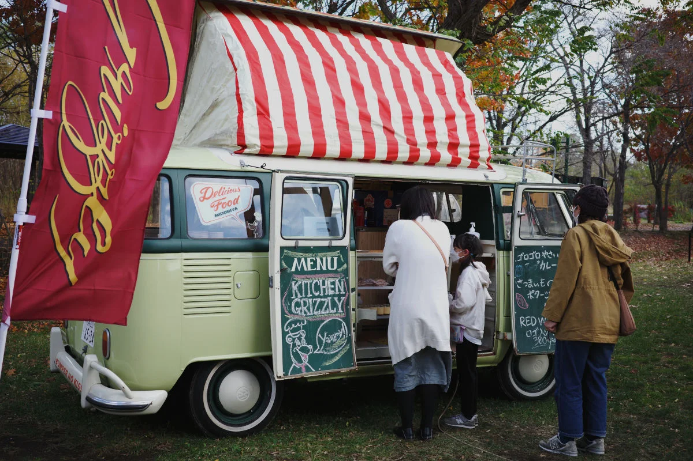
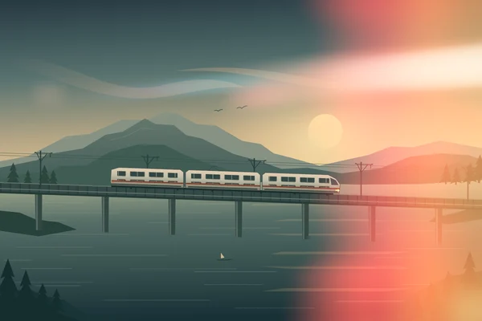

Vazamentos de luz de filme na sua RICOH GR. Sem gravar firmware.
Um módulo não oficial que roda do cartão SD. Testado na RICOH GR III com firmware 2.10. O efeito sai no JPEG e nas prévias, sem alterar o RAW.


Intensidade
Escolha quanta luz entra no quadro. Compare o Slit Flare em três intensidades na mesma foto.


Os estilos acima usam intensidade média, posição original e variação 1.
Mais controles
Posição
Escolha a borda por onde a luz entra. Original usa o lado padrão de cada estilo.
Variação
Mude a forma e as cores sem trocar de estilo. A variação 1 mantém o visual original.
Na câmera


Antes de instalar
O Light Leak faz parte do GRKit?
Não. É um módulo separado e não oficial. É preciso instalar antes uma versão compatível do GRKit.
Quais câmeras foram testadas?
O módulo foi testado na RICOH GR III com firmware 2.10. A GR IIIx usada na foto de exemplo e os demais modelos não foram testados com este módulo.
O efeito altera os arquivos RAW?
Não. O Light Leak sai no JPEG e nas prévias, não nos dados brutos do sensor.
Consigo ver o efeito antes de fotografar?
Não. O ícone no visor indica o estilo ativo, mas o efeito só aparece no JPEG gravado e em suas prévias.
Onde coloco o LITLEAK.GRM?
Copie para GRKIT/MODULES/LITLEAK.GRM a partir da raiz do cartão SD.
Como removo o módulo?
Desligue a câmera e remova GRKIT/MODULES/LITLEAK.GRM do cartão. Não precisa gravar o firmware.
Instalação reversível
Sem gravar firmware
O módulo roda do cartão SD sem modificar o firmware da câmera.
Fácil de remover
Para desinstalar, apague o arquivo do módulo do cartão.
Arquivos RAW intactos
O efeito é aplicado apenas no JPEG e nas prévias.
Projeto original
O Light Leak é um módulo independente para o GRKit. Obrigado a Yuexun Jiang (@ahonn) pela dedicação em criar e manter o GRKit e por tornar possíveis módulos como este.